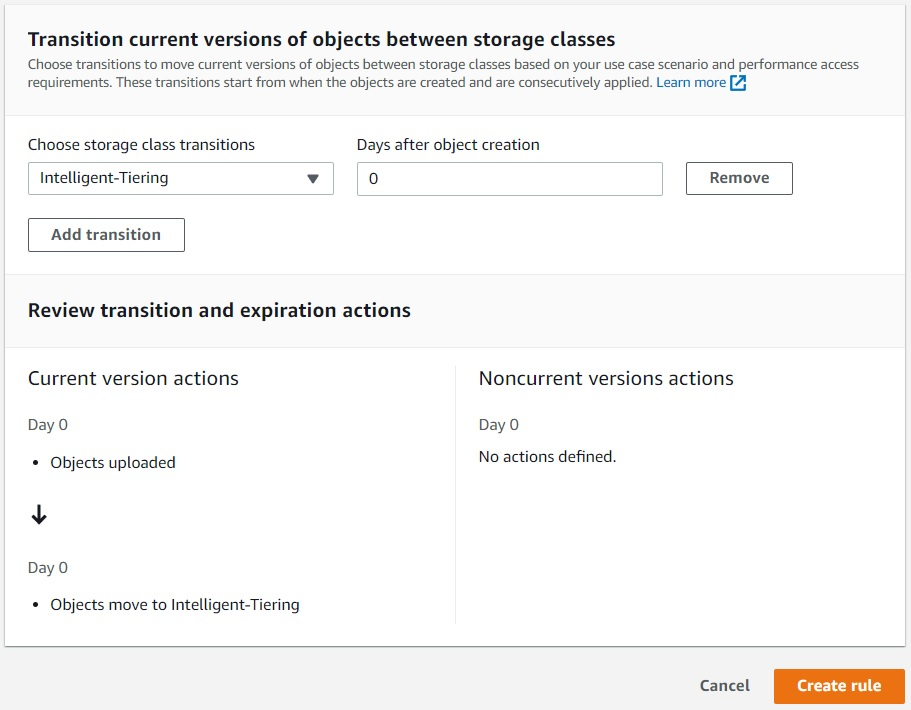

SCC
Brasil
os cloud gurus
Software Cloud Consulting
Your software development, cloud, consulting & shoring company
Save money on storage with S3 Intelligent-Tiering

By Daniel do Nascimento
Since the 1990s, the cost of storage per MB has been decreasing very rapidly, and this assumption
that we don't have to think about the cost
of storage has permeated most developers minds for a while.
But in the age of big data and cloud services, this issue has come back well, especially when we
use pay-as-you-go services like S3,
the next month's bill may remind us of a large amount of data that we forget to clean, or it is
not being used.
Fortunately for us, AWS has some tools to deal with this situation and save some money.
Options
As you can see there are many options, the problem is that most companies using S3 don't do all
the research on the correct tier to choose when
they upload the objects, and end up using S3 Standard for everything, primary because storage
should be simple (Simple Storage Service),
not (Complicated Storage Service).
The problem with this approach is obvious, we tend to pay for a service we don't really need,
but aws offers between these tiers an option that
solves most cases at a good discount, and this should be the new standard in my opinion.
The S3 Intelligent-Tiering moves objects from S3 Standard to S3 Infrequent Access, for
objects that are not used in 30 days, and moves the objects
not used for 90 days to Archive Instant Access Tier(Same characteristics as S3 Glacier Instant
Retrieval), saving up to 68% on these objects.
How it works?
S3 Intelligent-Tiering monitors the age of your objects (larger than 128KB), and since they
achieve a determined life(in days) without access,
the Intelligent-Tiering change the object tier configuration, putting the object in appropriate
tier e also retrieving from the tier when the object is accessed,
so continuously optimizing your object tier configuration.
How much does it cost?
In order to allocate the objects in the correct tier, S3 Intelligent-Tiering keeps track of the
age of your objects and this creates the additional cost.
But this cost is very low when compared to the savings that he generates.
The additional cost of S3 Intelligent-Tiering Monitoring and Automation today(february/2023) is
0.0025$ per 1000 objects.
You can check out the total cost using: S3
Pricing
How to use S3 Intelligent-Tiering
There are 2 ways to configure your objects to use Intelligent-Tiering, the first and simpler way
is just specify the INTELLIGENT_TIERING in the PUT API request header. Ex:
But, as you guessed, this method only works for one object at the time. What if you want to
convert all the objects that already are in a bucket, to S3 Intelligent-Tiering?
Then you have to create a S3 Lifecycle Rule in your bucket, you can apply this rule to the
bucket or folder/prefix level.

You can go further with your optimization and activate the Archive Access Tier and Deep Archive
Access Tier, but these two options require you to make a better analysis on
your objects and use, because they don’t allow for real-time access, they have retrieve times
from minutes to hours.
This simple configuration doesn't substitute a careful analysis of your application needs, but
helps you to save big without much complexity in configuration.
Autor

Daniel do Nascimento
AWS Developer
2 x AWS Certified